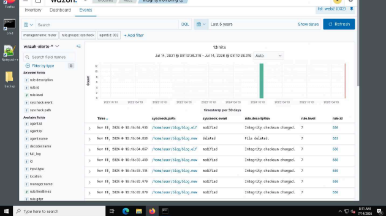
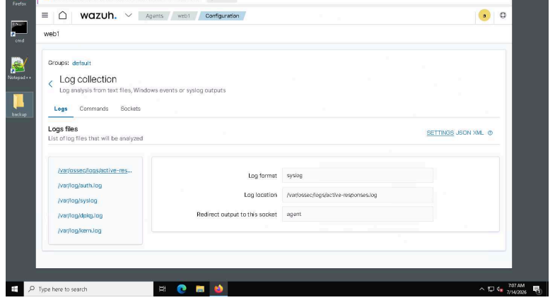
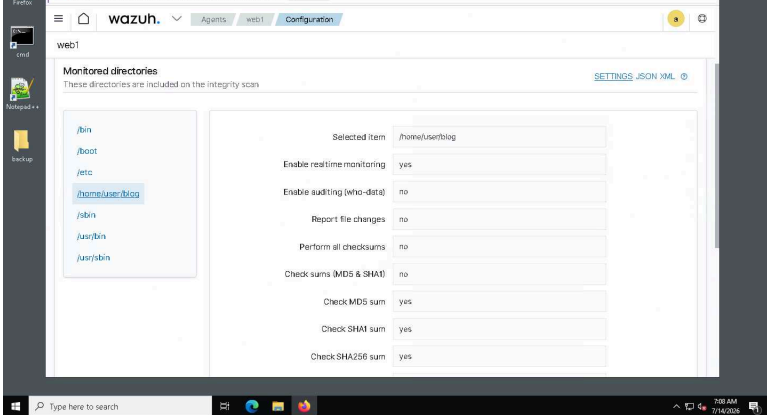
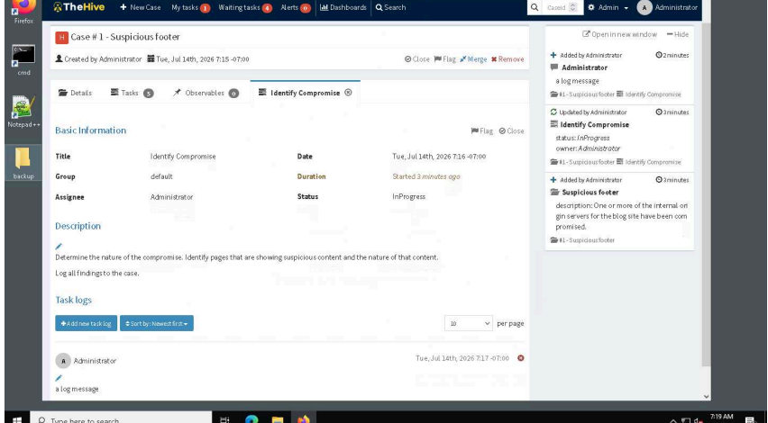
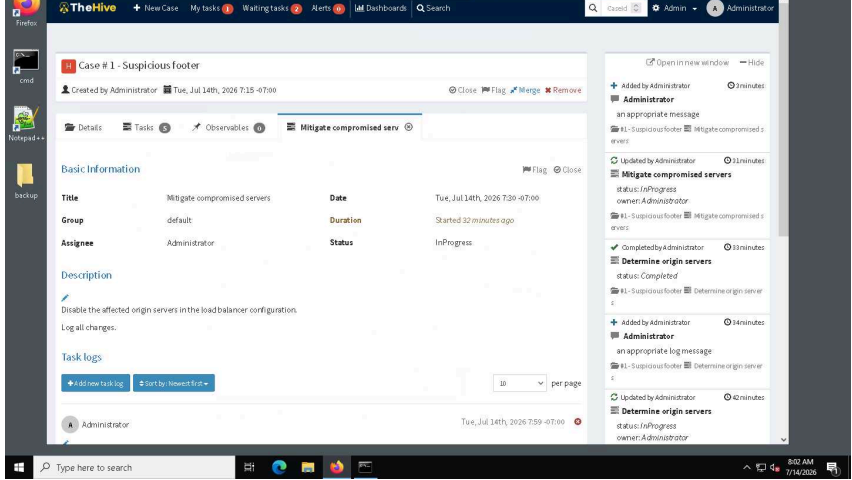
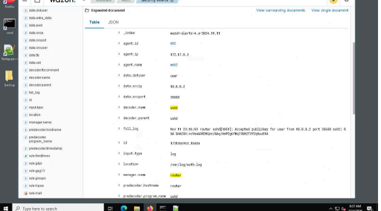
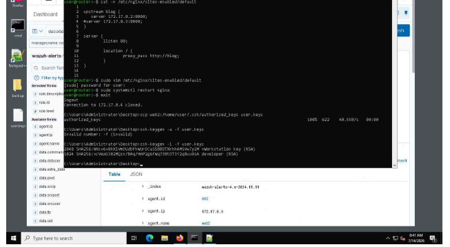
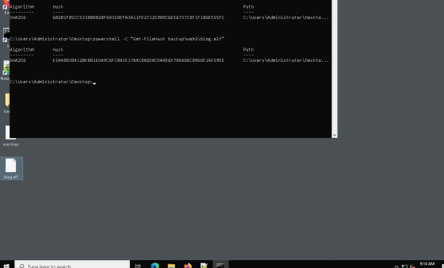
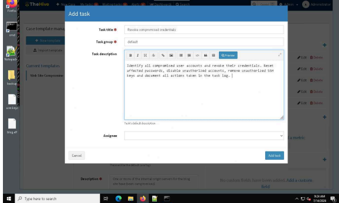
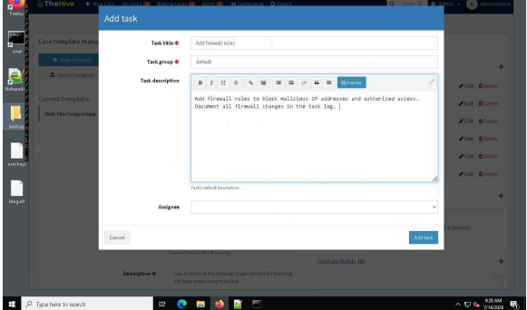

Case study 002 · Incident response
Security Incident
Investigation & Response
A structured investigation of unauthorized web content using SIEM telemetry, file integrity monitoring, case management, containment, root-cause analysis, recovery, and remediation planning.

File integrity events used to investigate unauthorized changes within the monitored blog directory.
Investigate, contain, and recover from unauthorized changes to a web application.
The lab centered on suspicious content added to an internal blog. The objective was to validate monitoring coverage, identify affected systems, document the case, investigate file and authentication evidence, contain compromised servers, restore service, and define corrective actions for future incidents.
Were the required logs and application files actively monitored?
Which systems were serving the unauthorized content?
What file and authentication evidence supported the investigation?
How could recovery and future remediation be made repeatable?
Validate coverage, open a case, contain, investigate, restore, improve.
- 01
Validate monitoring
Reviewed Wazuh log collection and real-time file integrity monitoring for the web servers and blog directory.
- 02
Confirm the incident
Observed the unauthorized blog content and documented the compromise in TheHive.
- 03
Identify and contain affected systems
Determined which origin servers delivered the content and recorded their removal from the load-balancer configuration.
- 04
Investigate root cause
Reviewed integrity events, SSH activity, authorized keys, file hashes, and system-log search results.
- 05
Restore service
Documented restoration of the affected origin servers from backups.
- 06
Standardize remediation
Added credential-revocation and firewall-rule tasks to a reusable TheHive case template.

Wazuh displayed the log sources configured for analysis on the web1 agent.

The /home/user/blog directory was configured for real-time monitoring and checksum validation.
Suspicious content became a structured incident-response case.
The investigation began after unauthorized content was observed in a blog post. TheHive was used to organize the response into discrete tasks for identifying the compromise, determining the affected origin servers, mitigating those servers, finding the root cause, and restoring service.
The case record connected technical evidence to assigned response actions, keeping investigation and containment work visible in one timeline.

The “Identify Compromise” task recorded the initial investigation of suspicious website content.
Affected origin servers were identified and removed from service.
The case workflow included determining which internal servers delivered the compromised pages and then disabling the affected origin servers in the load-balancer configuration. Each action was captured in TheHive task logs.
Tasks and logs organized the response workflow.
Affected systems were removed from load balancing.
Integrity and security events supported the investigation.

The containment task documented disabling affected origin servers in the load-balancer configuration.
File changes and SSH activity provided two complementary evidence paths.
Wazuh integrity events identified modified files under the monitored blog path. Security-event details exposed SSH log information, including the source address and key fingerprint used during an accepted public-key login. The authorized-keys file was then reviewed so fingerprints could be compared as part of the root-cause investigation.

The expanded SSH event supplied authentication details for the investigation.

Authorized-key fingerprints were generated for comparison with the SSH event evidence.
SHA-256 comparison confirmed the blog file and its backup were different.
Hash values were calculated for the current and backup copies of the blog file. The different SHA-256 results established that the files were not identical, adding direct integrity evidence to the investigation.

Different SHA-256 values demonstrated a content difference between the current file and backup.
Recovery restored systems; reusable tasks strengthened the next response.
The recovery task documented restoring the affected origin servers from backups. The response process was then extended with reusable TheHive tasks for revoking compromised credentials and adding firewall rules to block malicious addresses and restrict access.

Credential remediation was defined as a repeatable case-template task.

Firewall remediation captured blocking and access-control steps for future cases.
The lab connected detection evidence to a documented response lifecycle.
Wazuh supplied centralized log and integrity evidence, while TheHive turned the investigation into traceable tasks covering identification, containment, root-cause analysis, recovery, and remediation. The result was both an incident record and a reusable response structure for similar events.